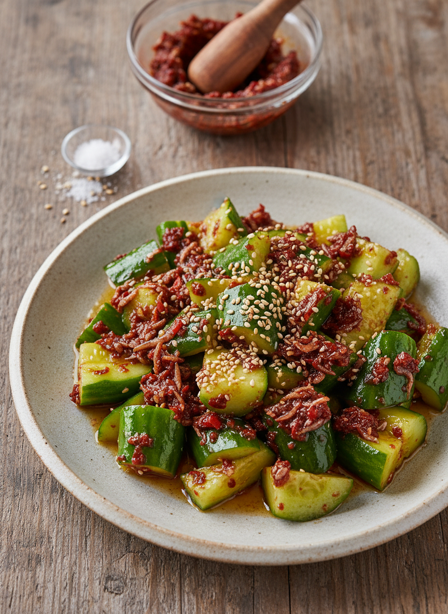

ロザマリーナのやみつききゅうり
パリッとしたきゅうりにロザマリーナの旨辛さが絡む、シンプルなのにクセになる一皿。
材料（2人分）
- きゅうり
- 1本
- 瀬戸内ロザマリーナ
- 小さじ1
- ごま油
- 小さじ1
- 塩
- ひとつまみ
- 白ごま（あれば）
- 少々
作り方
- きゅうりを麺棒などで軽く叩き、食べやすい大きさに割る。
- ボウルにきゅうりを入れ、塩をひとつまみふって軽く揉む。
- ロザマリーナとごま油を加えて全体を和える。
- 味を見て、辛さが足りなければロザマリーナを追加。
- 器に盛り、白ごまを散らして完成。器に盛り、白ごまを散らして完成。